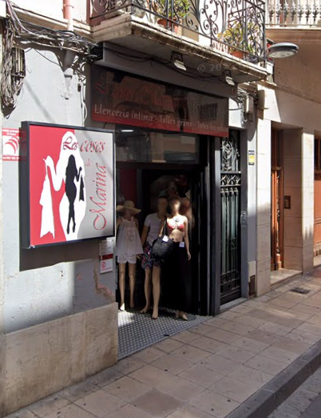

A Les coses de Marina creiem que la moda íntima ha de ser un espai de confort i confiança per a tothom, sense importar la talla o el gènere.
Ubicats al cor de Valls, oferim un tracte proper i un assessorament personalitzat. Ens allunyem dels estàndards irreals per centrar-nos en allò que realment importa: que et sentis bé amb tu mateix/a. Des de les peces més funcionals per al dia a dia, fins a col·leccions especials, tot està seleccionat amb molta cura.
Un consum responsable comença per conèixer l'origen. Com a part del nostre compromís amb la sostenibilitat, hem cartografiat la xarxa dels nostres proveïdors principals. Prioritzem marques amb producció ètica i de proximitat. Explora el mapa per conèixer els punts de fabricació de les nostres col·leccions.
Nota per al desenvolupament: Aquí es carregarà el mapa Leaflet de proveïdors exportat amb qgis2web.